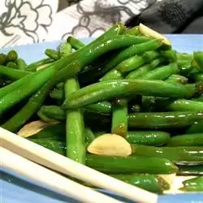

Chinese Buffet Green Beans

Description
Side dish that goes well with all Asian food. Simple to make but rich in flavor.
Ingredients
- oil
- garlic
- fresh green beans
- oyster sauce
- sugar
- soy sauce
Steps
- Heat oil over medium-high heat.
- Add garlic and stir until edges begin to brown.
- Add the green beans and stir until the are beginning to soften
- Add oyster sauce, soy sauce and sugar
- Stir until desired tenderness of the beans is reached.